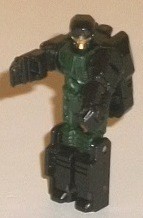
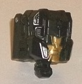
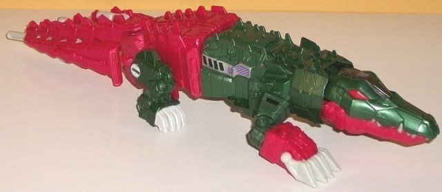
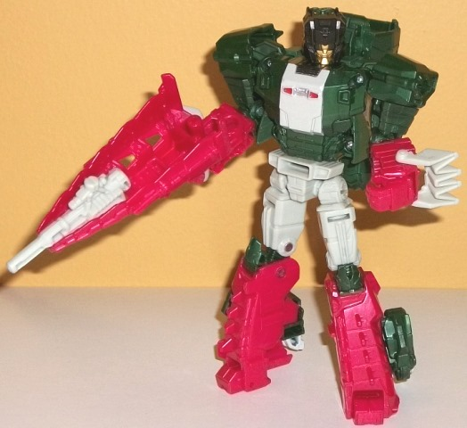

Allegiances
: Decepticon
Size
: Deluxe
Difficulty of Transformation
: Easy
Color Scheme
: Dark milky green,
moderately dark dull milky pink, bone whitish gray, and some black, pale
metallic gold, red, metallic black, silver, and moderately dark purple
Rating
: 7.6


Grax was Skullsmasher's
Headmaster in G1, so he returns as Skullsmasher's TITAN Master for Titans
Return-- i.e., he's still basically the same thing. In Titan Master mode,
he's mostly black with some dark swirly green used for his main body. The
dark green is a nice color, but when combined with the black it makes this
mode too dark; the green should've been lightened up a little bit, methinks.
Thankfully, there's some gold on his face, so there's at least a LITTLE
paint visible in this mode. Most of Grax's mold detailing is very generic;
he's got pretty square, unremarkable legs, a couple of details on his body,
and then his hands detailed on the inside of his arm pieces. What's rather
unique about Grax is his headsculpt, which has a pretty round head and
fairly large (proportionally) black eyes on his gold face. Like all Titan
Masters, Grax can move in this mode at the head and back-and-forth at the
shoulders, hips, and knees (with the latter two being at one point, as
the legs are one piece). In head mode, Grax is all black, with some nice
gold paint being used on Skullsmasher's face in a manner similar to Grax's
face himself. Also like Grax, Skullsmasher has a rather unique face-- a
slight departure from his G1 face, with had a more typical "long rectangular
visor with normal face and side antennae" head. Now, Skullsmasher has his
side details more curved yet pointy, with a nose in between his two large
eyes and several triangular details. Other than the lips being a little
more pronounced than I'd like, I think it's an improvement over the G1
headsculpt while still paying homage to it; I love it.


Skullsmasher is the
new trademark-friendly name for Skullcruncher, another of the original
G1 Headmasters. Just like the original, he's a robotic crocodile in alt
mode, though compared to the original this looks MUCH better. It's a very
streamlined, rather realistically-proportioned crocodile, with my only
issue in this respect being that his front legs are noticeably longer than
his back legs. There's no robot extras whatsoever. The other highlight
of this mode is definitely the mold detailing; I LOVE how Skullsmasher
is detailed robotically, but in a manner that approximates scales, along
with the little ridges you'd expect on a crocodile all along his back.
There's hinges and pistons and the like molded into all of his joints,
and inside his mouth there's an INSANE amount of detail-- LOTS of teeth
(all rubbery for safety reasons), and an incredibly detailed segmented
tongue! Like his G1 toy, Skullsmasher has a color scheme of dark green
and... well, pink. It's a darker kind of pink, but it's definitely pink...
can you tell he's an update to a toy from the late '80s? If the pink were
used in small amounts, I think it would be nice as an accent color... but
used in such huge amounts as this, I don't like it. The pale bone white-gray
used for his claws and parts of his tail is a realistic color, but bland,
and it doesn't fit as the color for his tongue. There's also precious little
paint in this mode-- beyond the aforementioned gray/white rear claws and
a hinge on the rear legs, he's got a a silver, purple, and black stripe
along the sides of part of his main body, and his eyes are painted a nice
red as well as the center of his head a metallic black. However, there's
no paint along his front legs or across his entire back-- and since his
front half is almost entirely dark green and his back half entirely pink,
this means there are large unbroken areas of color that desperately need
more paint, especially with this much mold detailing. For articulation
in this mode, Skullsmasher can move at the neck, jaw, rotation at the shoulders,
at two points on the front knees, slightly up-and-down at the front claws,
back-and-forth at the base of the tail, and only at the hips on the rear
legs. I wish the rear legs had a bit more articulation, but otherwise he's
about as articulated as you could reasonably expect. Skullsmasher's cockpit
for Grax isn't in his head like on the G1 toy, but rather under a rather
inconspicuous panel in the middle of the body. The problem with this is
that the panel is made of a rubbery plastic and is VERY hard to rotate
up-- I've shredded the top of my fingers more than once on the back scales
trying to get this darn flap open-- I recommend using a dime or something
to wedge it open.
Skullsmasher's transformation
is VERY basic, especially for a Generations deluxe-- you unfold his legs
from the back end, make the front legs into his arms, and fold back his
croc head and plug in his robot head. Proportionally, this mode is mostly
pretty decent-- I particularly like the wide shoulders and chest, making
him look like a bit of a bruiser. However, his lower legs can look a little
skinny from a frontal view, and his flip-out feet are pretty small. On
one hand, I'm glad that the rear croc legs on the sides of his lower robot
legs help stabilize him some, but on the other hand, his lower legs are
totally hollow in this mode-- couldn't the croc legs have folded into this
cavity so they weren't so obvious? The croc head and neck piece also stick
up a fair bit from the upper back, but they don't get in the way of articulation,
at least. On a smaller note, the croc body extends outwards a bit from
what would otherwise be a fairly slim stomach for Skullsmasher, so that's
a minor extra. I also wish the croc claws folded firmly onto the lower
arms somehow instead of just sticking out as much as possible from the
middle of the forearms. The mold detailing is a bit simpler in this mode,
with some more basic robot details on the chest, arms, and upper legs,
but they get the job done and don't make the toy look sparse by any means.
The colors are also broken up a bit more, most obviously by the addition
of more of the chalky white-gray on the chest, pelvis, and upper legs.
Beyond the chest, though, Skullsmasher still definitely needed more paint
apps. For weaponry, Skullsmasher has a pink tail-gun which a Titan Master
can sit in, and a smaller gray gun that can detach fron the end of the
tail-gun and held in his other hand-- fairly basic, but it gets the job
done. For articulation, Skullsmasher can move at the neck, shoulders (at
three points), elbows, inwards at the wrists, rotation at the waist, and
movement at the hips (at two points), knees (at two points), and ever-so-slightly
at the toes. The hip ball joints are VERY loose to the point where it's
hard to stand the guy up without applying some floor/nail polish to the
joints in question, which is unfortunate and especially unexpected on the
first release of a mold.
Titans Return Skullsmasher
has an excellently-proportioned and detailed crocodile mode, and some nice
proportions and articulation in robot mode as well, though not without
a few obvious croc extras. However, he's a bit overly simplistic for a
Generations deluxe-- obviously how much this matters to you will vary,
but he also has very loose hips and a bland/borderline bad color scheme
with not nearly enough paint apps. He's a decent deluxe, but Hasbro's done
much better (and could have done better with the overall design in terms
of tucking away a few things in robot mode). Recommended mostly for crocodile
fans.
Review by Beastbot